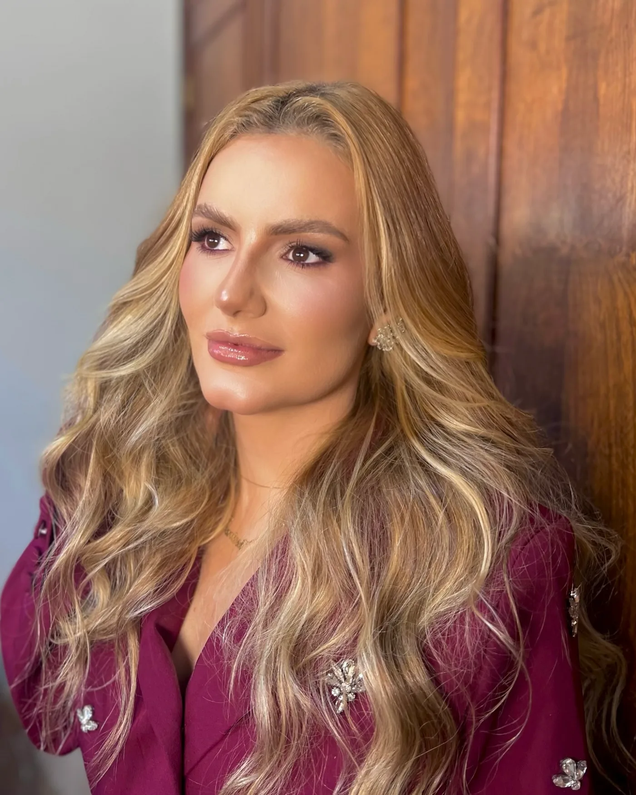
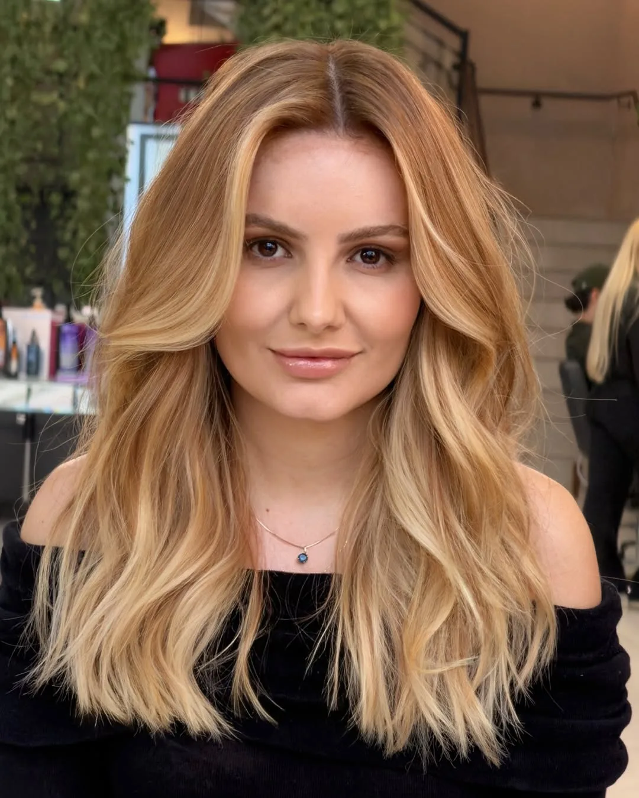

Dra. Larissa Amaral · Três Pontas, MG
Naturalidade que respeita a sua essência.
Um olhar atento para entender o que você deseja e cuidar do seu sorriso com atenção aos detalhes.
Cada sorriso tem sua própria história.
Antes de falar em tratamento, vem a conversa. Entender o que incomoda, o que você espera e quais dúvidas você traz é o que orienta cada atendimento.
Não existe um sorriso modelo para copiar. Existe o seu, com traços, proporções e uma expressão que merecem ser respeitados.

Prazer, Dra. Larissa Amaral.
Dentista em Três Pontas, MG, com dez anos de atuação na odontologia. No consultório, o trabalho com facetas em resina busca naturalidade, proporção e respeito às características de cada sorriso.
Cada atendimento começa pela escuta: a queixa, as expectativas e as dúvidas de quem chega orientam a conversa sobre as possibilidades para o caso.
- Registro profissional
- CRO-MG a confirmar
- Formação
- a confirmar
Facetas em resina
Facetas em resina podem ser consideradas quando a pessoa deseja alterar a forma, a proporção ou a aparência de alguns dentes. Se elas fazem sentido para você, só uma avaliação individual pode dizer.
Escuta individual
O ponto de partida é entender o que incomoda você e o que você espera do seu sorriso.
Atenção à proporção
Forma, tamanho e harmonia são observados em relação ao seu rosto e à sua expressão.
Planejamento conforme o caso
As possibilidades são conversadas com clareza, de acordo com o que foi observado na avaliação.
A indicação e o planejamento dependem de avaliação individual.
Conversar sobre minha avaliaçãoResultados
Casos de facetas em resina atendidos pela Dra. Larissa, publicados no Instagram dela. Cada sorriso tem um planejamento próprio: o resultado depende da avaliação individual.
Toque numa foto para ver em tamanho maior.
Vídeos
A Dra. Larissa mostra o processo das facetas e responde dúvidas comuns.
Retrabalho de facetas em resina0:58 · ver no Instagram Antes de fazer facetas, assista1:01 · ver no Instagram Naturalidade se constrói com técnica1:09 · ver no Instagram Um sorriso com naturalidade1:02 · ver no Instagram Quem tem lentes em resina pode tomar café?0:33 · ver no Instagram O processo por trás do resultado1:35 · ver no Instagram
Como funciona o atendimento
Entre em contato
Envie uma mensagem pelo WhatsApp. A equipe responde e orienta sobre o agendamento.
Agende uma avaliação conforme disponibilidade
Você escolhe, entre os horários disponíveis, o melhor momento para vir ao consultório.
Converse sobre seus objetivos e possibilidades para seu caso
Na avaliação, você fala sobre o que deseja e tira suas dúvidas com a Dra. Larissa.
O consultório
Atendimento em Três Pontas, MG. Enquanto o endereço completo não é publicado aqui, a equipe envia a localização pelo WhatsApp.
- Endereço
- Endereço completo a confirmar, Três Pontas – MG
- Horário
- a confirmar
Perguntas frequentes
Como agendar?
Envie uma mensagem pelo WhatsApp. A equipe informa os horários disponíveis e orienta sobre os próximos passos.
Facetas são indicadas para qualquer pessoa?
Não necessariamente. A indicação depende das características de cada sorriso, da saúde bucal e dos seus objetivos, e só pode ser definida em avaliação individual.
Como é escolhido o tratamento?
A partir da conversa e da avaliação. A Dra. Larissa ouve sua queixa e suas expectativas e explica as possibilidades para o seu caso.
Onde fica o consultório?
Em Três Pontas, MG. O endereço completo será publicado aqui em breve; enquanto isso, a equipe informa a localização pelo WhatsApp.
Quais formas de pagamento?
As formas de pagamento são informadas pela equipe no momento do agendamento.
Seu sorriso merece um olhar atento.
Converse com a equipe e saiba como agendar sua avaliação.
Falar pelo WhatsApp